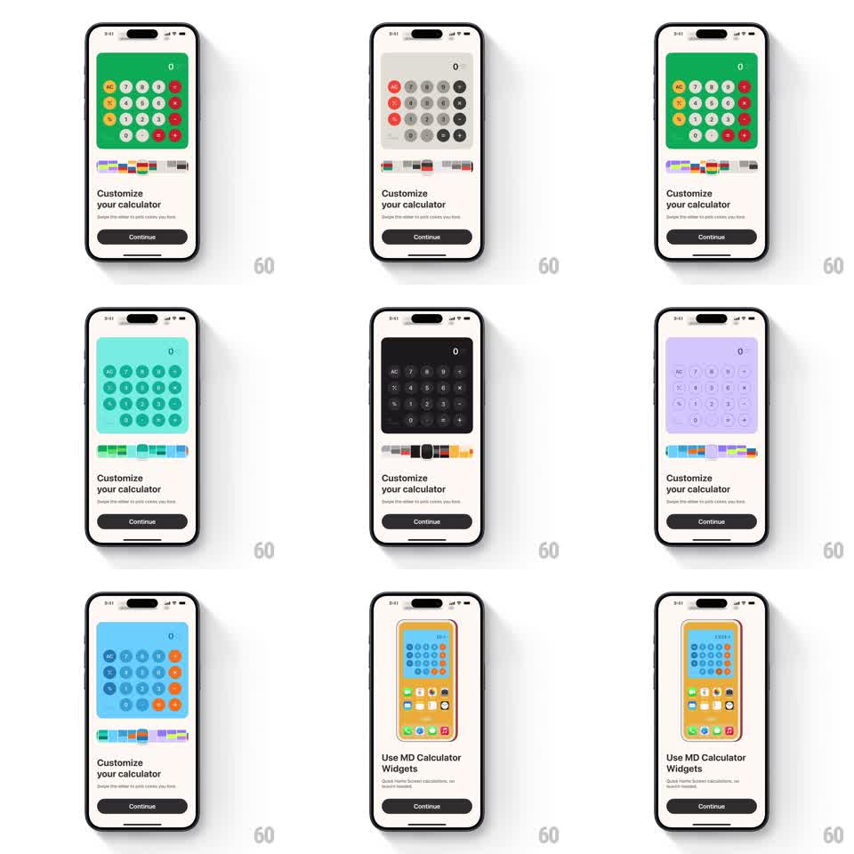

Media
Frame-by-frame

Rebuild this interaction 1:1: MD Calculator's theme picker - scrubbing a color-swatch slider re-themes a live calculator preview in real time (green/red, monochrome, teal, dark, lavender, blue/orange), then the flow lands on a "Use MD Calculator Widgets" screen.

Rebuild this interaction 1:1: MD Calculator's theme picker - scrubbing a color-swatch slider re-themes a live calculator preview in real time (green/red, monochrome, teal, dark, lavender, blue/orange), then the flow lands on a "Use MD Calculator Widgets" screen. ## Integration Integration: stack-agnostic spec - springs given as stiffness/damping, timed motions as duration + curve; map every value to your framework and animation library of choice. ## Scene Onboarding card: calculator mock (display, AC, digit/operator key circles) in a tinted panel, a palette slider of color swatches with a thumb beneath, "Customize your calculator" heading with subcopy, dark Continue button. Final screen: "Use MD Calculator Widgets" with a home-screen mock showing the themed calculator widget. ## Motion spec Pattern: scrub-linked live theming (palette slider). - Drag the thumb: palette position maps to theme index; panel background, key fills, and operator accents interpolate to the new theme (~120ms ease) - mid-scrub positions show blended themes. - Thumb enlarges while held (scale 1.15) with haptic ticks per swatch crossed; release snaps to the nearest swatch (spring ~350/26, ~200ms). - Continue: crossfades to the Widgets screen (~250ms), the home-screen mock rising slightly (10px, 300ms). ## Calibration - Themes change ONLY color - key layout and typography never move. - Both light and dark themes must keep digit contrast readable at every blend point. ## Reduced motion Theme swaps without interpolation (still live-tracking). ## Don't miss - The operator column carries the accent color; digits stay neutral per theme. - The thumb rests centered on a swatch - never between swatches after release.